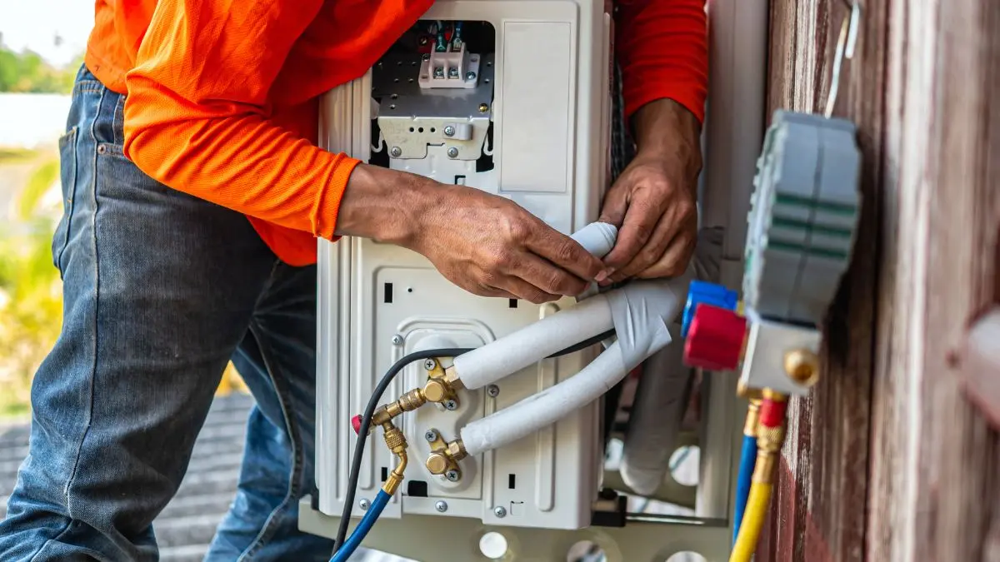

افضل شركة تنظيف مكيفات بالرياض 0559865517 وبالمملكة العربيه السعودية

تعد نقل الرياض واحدة من أفضل الشركات المتخصصة في صيانة مكيفات بالرياض حيث نقدم خدمات متكاملة تضمن الحفاظ على كفاءة المكيفات وضمان عملها بأعلى مستوى من الأداء ونحرص على توفير حلول احترافية لمعالجة جميع الأعطال التي قد تؤثر على التبريد وكفاءة التشغيل
للتواصل مع شركة نقل الرياض عبر الرقم 0559865517 ويمكنك مراسلتنا عبر الواتساب من خلال هذا الرابط.
سواء في المنازل أو المكاتب أو المنشآت التجارية يعمل فريقنا من الفنيين المدربين على تقديم خدمة صيانة دقيقة تشمل فحص المكونات الداخلية وإصلاح الأعطال وإعادة شحن الفريون وتنظيف الفلاتر والمراوح لضمان تدفق هواء نقي.
بالإضافة إلى الصيانة المتخصصة توفر شركتنا أيضاً خدمة تنظيف مكيفات بالرياض باستخدام أحدث المعدات والتقنيات المتطورة ونحرص على تنظيف جميع أجزاء المكيف الداخلية والخارجية لضمان التخلص من الغبار والأتربة المتراكمة.
والتي قد تؤثر على كفاءة التبريد وتسبب ارتفاع استهلاك الكهرباء كما أن تنظيف المكيفات يساعد على تحسين جودة الهواء الداخلي مما يضمن بيئة صحية خالية من البكتيريا والجراثيم.
تتميز نقل الرياض بسرعة الاستجابة وجودة الخدمة حيث نحرص على تلبية طلبات العملاء في أسرع وقت ممكن مع تقديم أسعار تنافسية تناسب جميع الفئات.
سواء كنت بحاجة إلى صيانة مكيفات بالرياض أو تبحث عن شركة متخصصة في تنظيف مكيفات بالرياض فإن نقل الرياض توفر لك الحلول المثالية للحفاظ على أداء المكيفات وضمان راحتك على مدار العام.
للتواصل مع شركة نقل الرياض عبر الرقم 0559865517 ويمكنك مراسلتنا عبر الواتساب من خلال هذا الرابط.
إقرأ ايضا : تنظيف مكيفات حي السويدي الرياض 0559865517 بأفضل الأسعار
شركة نقل الرياض لصيانة مكيفات بالرياض
تعد شركة نقل الرياض الخيار الأمثل لمن يبحث عن صيانة مكيفات بالرياض حيث نقدم خدمات شاملة تهدف إلى الحفاظ على كفاءة المكيفات وضمان تشغيلها بأفضل أداء طوال العام نحن نمتلك فريقاً من الفنيين المحترفين المدربين على التعامل مع جميع أنواع المكيفات.
سواء المكيفات الشباك أو السبليت أو المركزية نحرص على تقديم حلول صيانة دقيقة تشمل فحص المكيفات بالكامل للكشف عن أي أعطال محتملة وإصلاحها بسرعة وكفاءة لضمان استمرار التبريد بكفاءة عالية وتقليل استهلاك الطاقة.
إلى جانب خدمات الصيانة توفر شركتنا أيضاً خدمة تنظيف مكيفات بالرياض باستخدام أحدث التقنيات التي تضمن إزالة الغبار والأتربة من الفلاتر والمراوح والمبخرات.مما يساعد على تحسين جودة الهواء داخل المكان وزيادة كفاءة التبريد نحرص على استخدام مواد تنظيف آمنة وفعالة لا تسبب أي أضرار للأجزاء الداخلية للمكيفات كما أن تنظيف المكيفات بشكل منتظم يساعد في الوقاية من تراكم الجراثيم والبكتيريا التي قد تؤثر على صحة الأفراد داخل المنزل أو المكتب.
تتميز شركة نقل الرياض بسرعة الاستجابة حيث نوفر خدماتنا على مدار الساعة لضمان تلبية احتياجات العملاء في أي وقت كما نقدم عقود صيانة دورية تضمن الحفاظ على المكيفات بحالة ممتازة.
مما يقلل من الأعطال المفاجئة ويطيل عمرها الافتراضي نحرص على تقديم خدماتنا بأسعار تنافسية تناسب جميع الفئات مع ضمان جودة عالية في التنفيذ.
إذا كنت تبحث عن شركة متخصصة في صيانة مكيفات بالرياض أو تحتاج إلى تنظيف مكيفات بالرياض فإن نقل الرياض توفر لك أفضل الحلول بأعلى معايير الجودة يمكنك الاعتماد علينا للحفاظ على كفاءة المكيفات والاستمتاع بأجواء باردة ونقية طوال فصول السنة.
إقرأ ايضا : دينا نقل عفش حي السويدي بأفضل الأسعار 0559865517
كيف يتم تنظيف مكيفات بالرياض بواسطة نقل الرياض
يعد تنظيف المكيفات من الخطوات الأساسية للحفاظ على أدائها وكفاءتها ولذلك توفر شركة نقل الرياض خدمة تنظيف مكيفات بالرياض باستخدام أحدث التقنيات لضمان إزالة الأوساخ والغبار المتراكم داخل وحدات التبريد.
نحن نعتمد على فريق من الخبراء المتخصصين في تنظيف جميع أنواع المكيفات سواء المكيفات الشباك أو السبليت أو المركزية، مما يضمن تحسين جودة الهواء داخل المكان وزيادة كفاءة التبريد.
تبدأ عملية تنظيف مكيفات بالرياض من خلال فحص شامل للوحدة الداخلية والخارجية للتأكد من عدم وجود أي أعطال تؤثر على عمل المكيف.
بعد ذلك يتم تنظيف الفلاتر بعمق لإزالة الأتربة والشوائب العالقة والتي قد تؤثر على تدفق الهواء وتقلل من كفاءة التبريد ثم نقوم بتنظيف ملفات التبريد والمراوح باستخدام معدات متطورة تساعد على تفكيك الرواسب المتراكمة وإعادة تشغيل المكيف بكفاءة عالية.
بالإضافة إلى ذلك يتم تنظيف أنابيب تصريف المياه لمنع حدوث تسربات أو انسدادات تؤدي إلى تراكم الرطوبة داخل المكيف.
كما نقوم بفحص غاز الفريون والتأكد من مستواه الصحيح لتجنب أي نقص قد يسبب ضعف التبريد وإذا لزم الأمر يتم إعادة شحن الفريون وفق المواصفات المطلوبة لضمان الأداء المثالي للمكيف.
توفر شركتنا أيضاً خدمات صيانة مكيفات بالرياض لضمان استمرار عمل المكيف بكفاءة على مدار العام تشمل خدمات الصيانة الكشف عن أي أعطال محتملة وإصلاحها بسرعة.
بالإضافة إلى تشحيم الأجزاء المتحركة وفحص الوصلات الكهربائية والتأكد من عملها بشكل صحيح يساعد ذلك في تقليل استهلاك الكهرباء وإطالة عمر المكيفات مما يوفر على العملاء تكاليف الصيانة المستقبلية.
ما يميز شركة نقل الرياض أنها تقدم خدمات تنظيف مكيفات بالرياض بأسعار تنافسية وجودة عالية مع سرعة في التنفيذ ونحرص على استخدام مواد تنظيف آمنة لا تسبب أي ضرر للأجزاء الداخلية للمكيفات كما نوفر خدمة المتابعة الدورية للحفاظ على كفاءة التبريد وضمان هواء نقي وصحي داخل المكان.
إذا كنت بحاجة إلى تنظيف أو صيانة مكيفات بالرياض يمكنك الاعتماد على نقل الرياض حيث نوفر لك أفضل الحلول الاحترافية التي تضمن تشغيل المكيفات بأعلى مستوى من الكفاءة.
لماذا تختار شركة نقل الرياض
عندما يتعلق الأمر بالحفاظ على كفاءة المكيفات وضمان عملها بأفضل أداء فإن اختيار الشركة المناسبة هو أمر في غاية الأهمية وهنا تبرز شركة نقل الرياض كأفضل خيار لمن يبحث عن صيانة مكيفات بالرياض أو تنظيف مكيفات بالرياض.
حيث توفر خدمات عالية الجودة تعتمد على أحدث التقنيات وتقدم من خلال فريق من الخبراء المدربين على التعامل مع جميع أنواع المكيفات.
إحدى الأسباب الرئيسية التي تجعل شركة نقل الرياض الخيار الأفضل هي خبرتنا الواسعة في مجال صيانة وتنظيف المكيفات فنحن نقدم حلول متكاملة تشمل
- الفحص الدقيق للوحدات الداخلية والخارجية
- اكتشاف أي أعطال محتملة قبل أن تتفاقم
كما نحرص على استخدام أحدث الأجهزة والمعدات لضمان تقديم خدمة احترافية تحافظ على أداء المكيف وتطيل عمره الافتراضي.
عند طلب خدمة تنظيف مكيفات بالرياض من شركتنا فإننا نعتمد على تقنيات متطورة لإزالة الأتربة والشوائب العالقة في الفلاتر والمراوح والمبخرات.
مما يحسن تدفق الهواء ويزيد من كفاءة التبريد كما نحرص على استخدام مواد تنظيف آمنة تحافظ على أجزاء المكيف الداخلية دون التسبب في أي أضرار بالإضافة إلى ذلك نقدم خدمة تنظيف مجاري الهواء والتأكد من خلوها من العوائق التي قد تؤثر على تدفق الهواء النظيف.
صيانة المكيفات في اسرع وقت
أما بالنسبة لخدمات صيانة مكيفات بالرياض فإننا نقدم حلول شاملة تشمل إعادة شحن الفريون وإصلاح الأعطال الكهربائية وتنظيف أنابيب التصريف لمنع التسربات كما نقوم بفحص الوصلات والتأكد من عملها بكفاءة مما يساعد في تقليل استهلاك الكهرباء وتحسين أداء المكيف بشكل عام.
ما يميز شركة نقل الرياض هو سرعة الاستجابة حيث نقدم خدماتنا في الوقت الذي يناسب العميل مع الالتزام بالدقة والاحترافية في العمل كما نوفر عقود صيانة دورية تضمن الحفاظ على المكيفات بحالة مثالية على مدار العام مما يوفر على العملاء تكاليف الإصلاح المستقبلية.
إذا كنت تبحث عن شركة متخصصة في تنظيف مكيفات بالرياض أو تحتاج إلى صيانة مكيفات بالرياض فلا تتردد في التواصل معنا حيث نضمن لك خدمة ذات جودة عالية وأسعار تنافسية تساعدك على الحفاظ على أجواء باردة ونقية طوال الوقت.
أدوات صيانة عالية الجودة من شركة نقل الرياض
تعتبر الأدوات المستخدمة في صيانة المكيفات عامل رئيسي في تحقيق أفضل النتائج وضمان استعادة كفاءة التبريد بسرعة لذلك تعتمد شركة نقل الرياض على أحدث التقنيات والمعدات المتطورة.
التي تساهم في تقديم خدمات صيانة مكيفات بالرياض بأعلى معايير الجودة حيث نحرص على استخدام أدوات متخصصة لكل مرحلة من مراحل الصيانة لضمان أداء مثالي للمكيفات وإطالة عمرها الافتراضي.
نستخدم في شركتنا أجهزة فحص حديثة تساعد في اكتشاف الأعطال بدقة عالية حيث يتم توصيل المكيف بأجهزة قياس متطورة تعمل على تحليل أداء الضاغط والمراوح ومستوى الفريون.
مما يمكننا من تحديد أي خلل في وقت مبكر وإصلاحه على الفور كما نستخدم مضخات تفريغ الهواء التي تساهم في إزالة الرطوبة والهواء غير المرغوب فيه داخل أنابيب التبريد مما يعزز كفاءة التبريد ويحسن أداء المكيف.
بالإضافة إلى ذلك نوفر معدات تنظيف مكيفات بالرياض عالية الجودة حيث نعتمد على أجهزة بخار قوية تعمل على تفكيك الأوساخ والبكتيريا المتراكمة داخل الفلاتر والمبخرات والمراوح.
مما يضمن تدفق هواء نقي وصحي كما نستخدم مضخات مياه مضغوطة لتنظيف الملفات الخارجية والتخلص من الغبار والأتربة التي قد تؤثر على أداء المكيف وتزيد من استهلاك الكهرباء.
أما في حالات إعادة شحن الفريون فإننا نوفر أجهزة تعبئة دقيقة تساعد على ضبط مستوى الغاز داخل المكيف وفق المعايير المطلوبة مما يضمن التبريد الفعال دون أي تسريبات كما نقوم بفحص أنابيب التوصيل باستخدام كواشف التسرب الحديثة للتأكد من عدم وجود أي خلل قد يؤثر على كفاءة التبريد.
تتميز شركة نقل الرياض باستخدام أفضل أدوات صيانة مكيفات بالرياض لضمان تقديم خدمات دقيقة وفعالة مما يجعلنا الخيار الأمثل لكل من يبحث عن حلول صيانة احترافية.
بالإضافة إلى ذلك نحرص على استخدام مواد تنظيف آمنة تحافظ على الأجزاء الداخلية للمكيف دون التسبب في أي ضرر مما يساعد في الحفاظ على المكيفات بحالة ممتازة على مدار العام.
إذا كنت بحاجة إلى تنظيف مكيفات بالرياض أو صيانة مكيفات بالرياض فإن نقل الرياض توفر لك الأدوات والمعدات المتطورة التي تضمن تحقيق أفضل النتائج والاستمتاع بهواء نقي وتبريد فعال طوال الوقت.
للتواصل مع شركة نقل الرياض عبر 0559865517 ويمكنك مراسلتنا عبر الواتساب من خلال هذا الرابط.